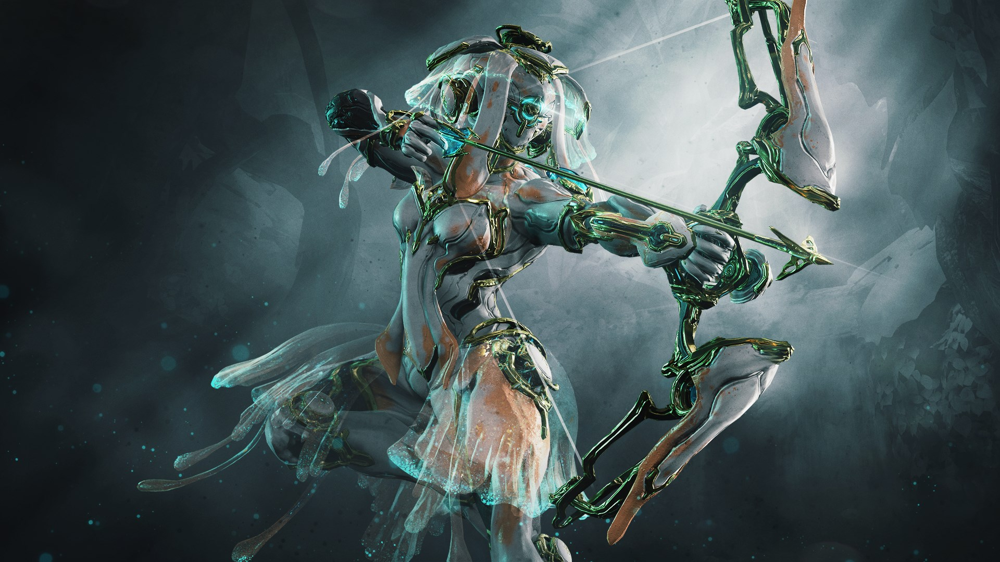

SettingSet in the future, players control members of the Tenno, a race of ancient warriors who have awoken from a century-long cryosleep to find themselves at war with the Grineer, a matriarchal race of militarized and deteriorated human clones built upon metal, blood, and war; the Corpus, a mega-corporation with advanced robotics and laser technology built upon profit; the Infested, disfigured victims of the Technocyte virus; and the Sentients, a race of self-replicating machines made by the Orokin; returning from a stellar system known as the Tau system after being driven back centuries ago in an ancient war. The Lotus guides the Tenno through situations which may seem difficult, as well as gives hints which help the player defeat enemies. To fight back, the Tenno use bio-mechanical suits, the eponymous Warframes, to channel their unique abilities. [1] All of the factions encountered in the game, including the Tenno, were created by or are splinter groups of the old Orokin Empire, an ancient fallen civilization and former reigning power in the Solar system that was led by an elite caste of trans-humans known as the Orokin. Although most of them are long dead by the time of the Tenno's awakening, their lingering presence can be still be felt throughout the Solar system. |